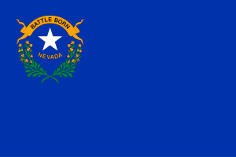
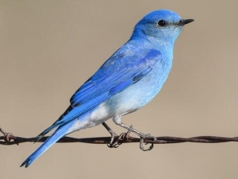
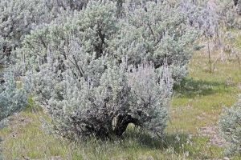
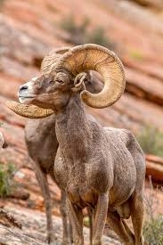

Would you like to know more?

Did you know?
That the National bird of the state of Nevada is the Mountain Bluebird? Due to the structure of its feathers it reflects light in a way that makes it blue. Other than that the state flower is the Sagebrush. It's crucial to keep many of the plants in the desert alive due to the shadow they provide.
The state animal is the Desert Bighorn Sheep. Its quick and agile for its size. Perfect for the rocky terrain that Nevada has.
Nevada
Nevada is an inhospitable place, yet it is still sprawling with life. From animals to cities of sin. Nevada truly has everything taboo and tempting inside its borders. Las Vegas being the pinnacle of what people consider "Nevadan". Though the real capital lies far northwest of Las Vegas. The real fun is in the south with amazing views like the night lights of Las Vegas or the giant construct known as Hoover Dam. With a rich history and many chances to indulge, will you let Nevada be your next vacation spot?